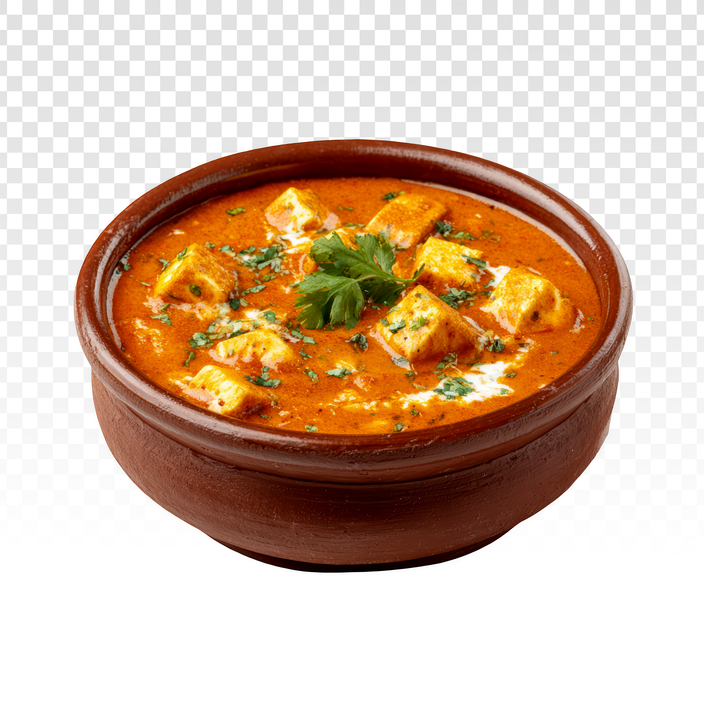

Shahi Paneer

Description
Paneer-based curries are a popular choice for both meat-eaters and non-meat-eaters in India. It can be prepared with various options, including a spicy gravy, a dry variant, and a creamy sauce-based curry. One such easy, simple and rich creamy-sauce curry is the shahi paneer masala, known for its mild and sweet taste.
This recipe is a mild, or less spicy, paneer-based curry. As the name suggests, shahi means royal due to the use of cream in it. Consequently, using the cream would lower the spice level, thus offering a creamy and rich paneer gravy.
Ingredients
For the Base
- 2 tablespoons cooking oil
- 1 large onion, thinly sliced
- 4 cloves garlic, minced
- 1 teaspoon ground cumin
- 1 teaspoon ground coriander
- ½ teaspoon ground turmeric
- ½ teaspoon Kashmiri red chili powder
- 4 tomatoes, puréed
For the Gravy & Finish
- 8 ounces paneer, cubed
- ¼ cup water
- 1 teaspoon white sugar
- salt to taste
- ¼ cup heavy cream
- 2 tablespoons chopped fresh cilantro
Steps
- Warm the oil in a large pan over medium heat.
- Add the onion and garlic and sauté until the onion turns golden and soft, about 5 minutes.
- Stir in the cumin, coriander, turmeric, and chili powder and cook for about 30 seconds until fragrant.
- Pour in the puréed tomatoes and cook until the liquid reduces and the oil starts to separate, about 3 to 5 minutes.
- Gently add the paneer, water, sugar, and salt, stirring carefully to keep the paneer pieces intact.
- Let it cook for about 10 minutes so the paneer can absorb the flavors.
- Stir in the cream and let it simmer for another 5 minutes.
- Finish with a sprinkle of fresh chopped cilantro before serving.
Home